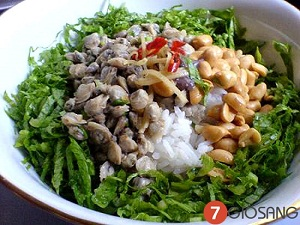

Cách nấu cơm hến ngon đúng hương vị Huế đậm đà sẽ cho bạn một bữa trưa ngon miệng như ý. Vào những ngày trời nắng nóng, món canh hến đem đến hương vị thanh mát tuyệt vời để giúp cơ thể thoải mái hơn. Bên cạnh đó, món cơm hến cũng sẽ giúp các bạn cảm nhận một hương vị trên cả tuyệt vời, khiến cơ thể sảng khoái, dễ chịu hơn. Bạn hãy cùng mecuti.vn nấu món cơm hến ngon nhé.

Cùng bắt tay làm thử thôi nào!
Bạn chuẩn bị những nguyên liệu sau để nấu nhé
- 2 pack hến luộc sẵn (khoảng 250g/pack)
- 1 túi mussel khoảng 1 kí (nghêu)
- Cơm nguội
- Đậu phộng, mè, dầu ăn
- Màu điều, da heo, bột ớt hay sa tế
- Gừng, tỏi, mắm ruốc Huế
Mách nhỏ các chế biến rau ngon nhé
- 1 bắp chuối non: bào mỏng ngâm nước lạnh có vắt ít chanh để không đen
- 4 cây bạc hà: bào sạch vỏ, bào mỏng đoạn 2-3cm
- Rau thơm: rửa sạch
- 4 trái khế hoặc 1 trái xoài/táo xanh: bào mỏng
- 200g giá rửa sạch
Cách làm cơm hến nè
- Mè rang vàng
- Đậu phộng: cho 1 ít dầu ăn + 2 tsp điều phi cho ra màu rồi vớt hột điều bỏ, cho 2 cúp đậu phộng vào rang nhanh tay. Nêm ít muối.
- Da heo: rửa sạch, để ráo, cắt lát cỡ 1 lóng tay. Bếp để lửa trung bình. Cho 1tbsp dầu ăn vào chảo cho nóng, cho da heo vào chiên giòn (trong 2 phút đầu nên đậy nắp để tránh bắn mỡ, sau đó mỡ nắp ra để da heo vàng giòn).
- Ớt: cho 1 ít dầu ăn vào chảo cho nóng, cho ít tỏi băm vào phi thơm rồi cho ớt bột vào xào nhanh tay rồi tắt bếp.
- Nghêu ngâm nước muối trong 20 phút cho nhả sạch cát, rửa sạch. Lấy 1 nồi nước khoảng 2 lít nước, nêm chút muối vào rồi cho nghêu vào luộc. Nước sôi chừng 5 phút nghêu há miệng hết thì vớt ra, lọc lấy phần nước trong không cặn, tách thịt nghêu ra cho vào nồi nước vừa lọc để nấu tiếp cho ra nước ngọt. Gừng cắt miếng mỏng 1mm đập dập cho vào nồi nước nghêu.
- Mắm ruốc: pha 3 muỗng mắm ruốc + 3 muỗng đường + 3 muỗng canh nước nghêu luộc (công thức này thay đổi tuỳ gu gia đình, nếu không thích ngọt có thể không nêm đường, nếu thích chan nhiều cho đỡ khô thì pha nước nghêu nhiều hơn)
- Hến: rửa sạch lại 1 lần. Khử dầu ăn với tỏi rồi cho hến vào xào. Nêm 1 muỗng nước mắm + 1 muỗng tiêu.
Nếm món cơm hến này nhé
- Cơm hến: cơm nguội đánh tơi hoặc dùng tay đeo găng bóp rời hạt.
- Cho vào bát mỗi thứ một ít, chan 2 giá nước nghêu luộc rồi chan thêm mắm ruốc.
- Nêm nếm bằng mắm ruốc và muối, bột ngọt.
- Quan trọng: nước nghêu luộc phải nóng.
Cách nấu cơm hến ngon trên đây đúng hương vị Huế khiến cho món ăn đậm đà hương vị, béo mà không ngấy, thơm mùi mắm ruốc mà không nặng mùi. Đây sẽ là một trong những món ngon đáng để bạn thưởng thức trong những ngày trời nóng nực đó. Món ăn dân dã mà đơn giản này sẽ khiến bạn luôn nhớ về một Huế với phong cách ẩm thực tuyệt vời. mecuti.vn chúc các bạn ngon miệng.